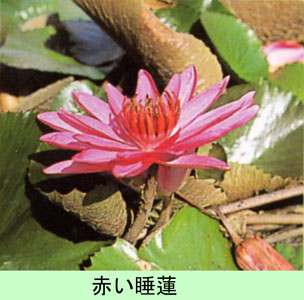

まえがき
第二次世界大戦が終り、すでに４３年の歳月が過ぎた。私の青春は志に反して、日支事変（日中戦争）とソ満国境守備
に始まり、ガダルカナル、東部ニユーギニア方面の南太平洋作戦に明け暮れた。昭和１６年１２月８日（１９４１年）米英和
に宣戦布告と同時にソ連極東軍（６０万）と北満、孫呉で一ケ年間対陣し、酷寒零下４０度をこす国境警備の任務もつら
かった。それ以上に灼熱４０度を越すジヤングルの中の戦闘の方はもっと強烈な印象として心に残っている。秘境、魔境
と恐れられ、人喰い人種も住む東部ニユーギニア戦線に３年３ケ月という長期に亘って、日本の本国から糧道を断たれな
がら、米英連合軍と苛烈悲惨な戦闘を続けたことは決して忘れられない。

戦いすんで、かって戦場と化した東部ニユーギニアは今、パプア・ニユーギニア国として昭和５４年９月１４日
（１９８９年）に独立した。国土はビスマルク群島、ソロモン群島、東部ニユーギニアからなっている。黒と赤地の国旗に、
黒地には南十字星が輝き、赤地には極楽鳥が舞っている。この東部ニユーギニアに１５万有余の日本軍が進攻し、再び日
本に生還できた将兵は僅か１万余名であった。護国の鬼となった１３万有余名の白骨がいまなお彼の地のジヤングルの中
に静に眠っている。ご冥福をお祈りします。なんとも非情な戦場でした。
昭和６３年８月１５日
南方総軍 南海派遣軍
第八方面軍隷下・第十八軍（猛軍)・軍通信隊無線小隊長
舩 越 安 治